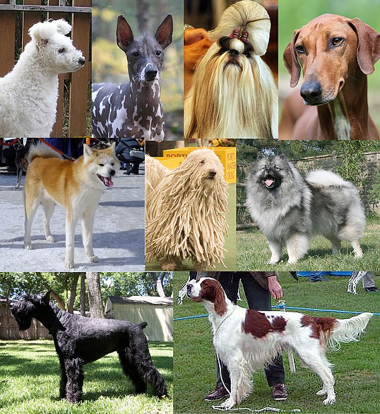

Disponible para nuevos desafíos
Ideas que se convierten en experiencias digitales.
Soy Juan Matías Carretero, desarrollador web en constante evolución. Me gusta resolver problemas, aprender tecnologías y crear soluciones simples que se sienten bien.

Curioso por naturaleza.
Constructor por elección.
Estoy capacitándome en desarrollo web y tecnologías digitales. Disfruto diseñar soluciones, escribir código eficiente y transformar una idea en algo útil para las personas.
El trabajo en equipo, la comunicación clara y el aprendizaje continuo son parte de mi forma de trabajar. Cada proyecto es una oportunidad para hacerlo un poco mejor.

01 / 01Proyecto personal · En evolución
Razas de perros
Una página web dedicada a explorar distintas razas de perros. Fue mi primer laboratorio para practicar estructura, estilos y contenidos web.
Visitar proyecto ↗¿Construimos algo juntos?
Si tenés una idea, una oportunidad o simplemente querés saludar, escribime. Siempre estoy abierto a conocer nuevos proyectos.
juanmat1982@mail.com ↗